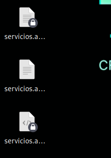
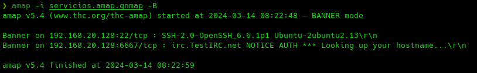

sudo apt install amap
sudo nmap -v --reason -sS -oA servicios.amap 192.168.20.128

amap -i servicios.amap.gnmap -B
Lo que hace a AMap es tratar de consultar los diferentes puertos que tenemos abiertos en búsqueda de ese banner y nos muestra por pantalla el banner de manera que podamos identificar nosotros qué tipo de servicio es.
